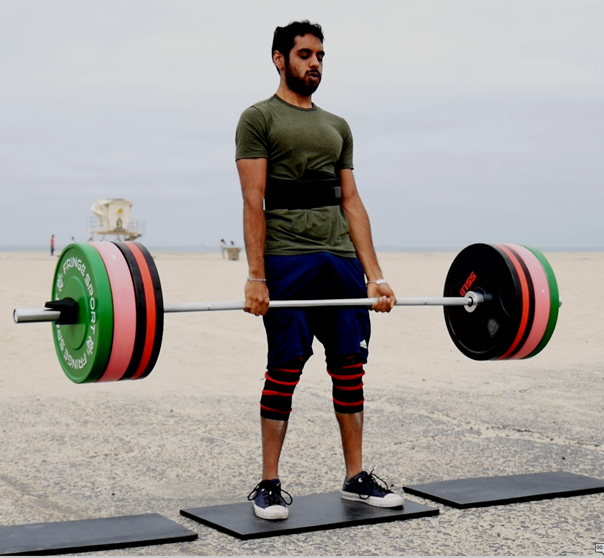
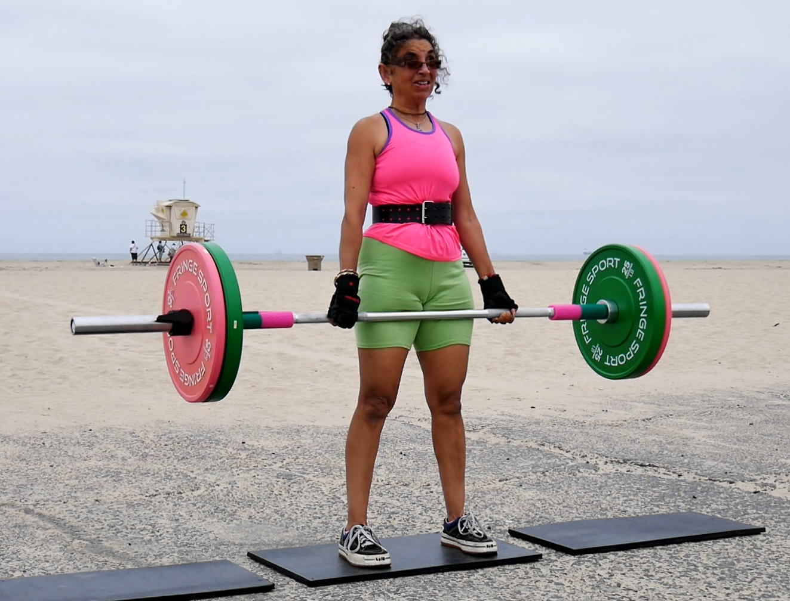

How positive outcomes are correlated with physical activity
Jun 07, 2021
tldr A structured fitness plan can greatly improve your career and your quality of life as a knowledge worker. Ignoring your health may work in the short term but will catch up to you slowly and subtly. I say this as someone who neglected my health while trying to get ahead at work, and as someone who then subsequently spent years losing the weight and getting back to a healthier state. It is really really really worth it to find ways to include a baseline level of physical activity in your life. It will yield dividends in more ways than you can anticipate.
Most exercise related posts are either written for too general an audience, written for fitness professionals, or are total scams. I'm writing this blog post to hopefully show other knowledge workers that transformational change is possible and worth it, even if for no other reason than to make you a better knowledge worker.
If you'd like me to write more about this topic, send me an email, or @ me on twitter, or however else you can get a hold of me. I am happy to open source my knowledge just like I open source my code.
So why am I posting this?
I have a hypothesis that many desk-bound folks are unaware of all the benefits that physical activity can have
specifically on one's career or on their lives in general.
I also think we tend to too easily sacrifice our long-term health for our career.
I say this from experience.
I went from being a skinny nerd an overweight nerd because I was "too career focused".
I found myself in a situation where, frankly, life just "didn't feel great".
For many reasons I had to make a change, and after much concerted effort,
I've been able to make meaningful progress, so
I want to definitively state the benefits are greater in number and in magnitude than I ever expected
For one, for the first time ever I am not embarrassed about my appearance.

But aside from that I've discovered numerous benefits that I can apply in my knowledge-work career.
Before that though, a disclaimer - I'm definitely not a medical professional. These observations are based on my own experience. I am a professional statistician though and I can say that is not controlled study either; At best it is a biased observational study with a sample of one - me. However I feel like I have to share something, since I've gone from feeling pretty poorly each day and being warned about my weight by a doctor to feeling so much better. So I'm writing in that hope that it inspires someone to be a better version of themselves. I genuinely believe that becoming a better version of yourself is more possible and even more beneficial than you may think.
So let's get to it already; What is better?
I'll primarily speak to the short-term benefits because I don't want to wait 50 years to write this blog post. I've experienced the usual ones you read about including increased energy, better sleep, and improved mood. For instance I no longer experience random pains when I wake up and in general I feel like more of my days in general are less of a slog.
But more specifically, I find that this lifestyle change comes with a host of benefits for knowledge workers. For me those benefits have ranged from specific physical improvements related to desk work to more holistic changes. Overall, I believe it has put me in a better position to navigate my career with more productivity and reduced anxiety. Below I'll talk about the benefits in greater detail.
Desk work doesn't hurt anymore
Typing used to hurt-literally. After using a keyboard for an extended period of time I used to experience wrist pain and I had to take breaks. I was 27 at the time so my body failing me a was a new phenomenon. It also affected my work output and I still remember the occasional days when I'd have to grit my teeth through the pain to get something done to meet a deadline. But now I'm happy to report that all my desk related pain is gone and most pain in general. For me weightlifting was a better fix for desk ergonomics than any tutorial I read online or seminar I attended at work
Increased mental focus
Strenuous physical exercise enhances your focus and mental toughness. With knowledge work its easy to feel productive when you're multitasking and not actually focused or when your mind is wandering. Conversely it's really hard to multitask when you're physically exerting yourself. Your performance notably drops. The focus trained in physical exercise has helped me stay in flow states to get more deep work done.
Self-owned Objective goals
It's hard to objectively measure knowledge work. Ideas are largely judged by other humans and the measure is largely subjective. Physical-activity goals, by contrast, are much more tangible. It's relatively simple to measure progress by steps taken, weight lifted, duration biked. In particular, the time from goal initiation to final measurement usually happens within the day, whereas in knowledge work it can take years.
When I was entirely focused on my career I used to get anxiety about the possibility of a project not being well received, or about missing out on a promotion. What was happening was all progress and accomplishments were being measured by others. With my fitness goals I now have a portion of my life where progress is owned entirely by me. Self owned goals has reduced the pressure I put on myself, as I no longer use work as the sole measure of life progress.
Faster feedback loop
Before when I missed a day of sleep I would mask the effects with caffeine and ignore my reduced mental performance. It'd take a week or so of poor sleep habits before the effects became problematic enough for me to correct them. Now, these lack-of-sleep regressions show up more quickly in my physical output levels, especially through the objective measurement I mentioned above. The same goes for stress levels or lack of mental focus at work. Since the physical detriment shows up quickly I'm able to self-correct much faster especially before it affects my knowledge work too severely.
Increased confidence in navigating my career
"Knowing things" is the bare minimum for a knowledge career. Being able to clearly communicate ideas, tactfully push back on requests, or state your own self worth in situations such as performance reviews are important skills in intentionally controlling your destiny. It's hard to do those things when you don't feel confident in yourself. Even though the amount of weight I can lift, or the composition of my body should be independent of my self confidence, I find that, for me, they are correlated. Put simply, improvements in my "physical" self have made me more confident in my "knowledge" self. I don't wake up wishing I were someone else or thinking that I have to "fake it" to "make it".
Downsides
For all the upsides of changing my lifestyle I should mention the downsides. As you can probably guess I feel the upsides far outweigh the downsides in my case, but I will list downsides I experienced here so you can judge for yourself.
It takes active planning, effort
You really do have to think about what you want to do, why you want to do it, and how to get there. Then you actually have to do it which can be a slog. Reading Hacker News or eating unhealthy foods is easier and comfortable in the short term. This downside can be mitigated by making changes of a smaller magnitude, but then it takes longer for results to appear. Bottom line, a level of dedication and patience is essential..
It's harder at the beginning
All the above is compounded at the start, when you are not getting any of the benefits, but you're definitely paying the upfront costs of all the planning, confusion, and lack of experience. Like anything changing your lifestyle is a learned skilled and it takes time to figure everything out before it becomes second nature.
It can take time
The whole process takes time, the most valuable commodity-especially for knowledge workers. I personally learned to mitigate the "time loss" through a number of strategies but the fact remains that I need to set aside dedicated hours in my week. Now I think my peers use time as an excuse to justify avoiding the work but that's a topic for another blog post
Lack of instruction relevant for working professionals
A lot of the content available is not targeted for working professionals. Even if we ignore the blatant scams, much of the material is written for professional athletes or actors who can work out twice a day or eat six carefully measured meals. Cracking open a Tupperware container full of tilapia each day during multiple meetings each day doesn't fit my life. The all-in or not-at-all mentality is a non starter. It took a while for me to piece together what worked in my situation, without me losing my job, and it likely will for you too.
So where can you go from here?
If you're compelled to make a change my first suggestion is to give it some thought and write down a specific goal you'd like to achieve. This is no different than writing down precise objective functions for a statistical model or setting a concrete goal for a team. Saying you want your model to be "more accurate" is about as imprecise as saying "you want to walk more everyday."
The quote “A problem well-defined is a problem half solved.” is applicable here.
For example here are my goals:
- I was unhappy with my body composition. After conducting a lot of internet research I determined that I wanted to somewhere around 10% body fat
- I am particularly inspired by people with high strength performance capabilities, so I've decided that I'd like to be able to deadlift 500 pounds squat 400 pounds, and bench 300 pounds.
- I'd also like to be able to perform ring muscle up with ease. This one is not such a well-defined goal but since it's a sub goal of the one above I'm ok with adding it here.
These are just some examples: if you'd like to know my other goals feel free to ask.
Should I keep writing about these topics?
I really believe in the power of sharing ideas and knowledge with others. It's why so I'm so committed to "open source" codes and communities, and it's something I believe applies here as well
I can also share what I know about topics like
- Physical fitness as a knowledge worker
- Strength training with a "9-to-5" schedule
- My particular strategy and results for strength gain and fat loss
- Anything else you'd like me to share
If interested get in touch with me. I'm happy to share!
P.S. Weightlifting is really fun (for everyone)
Lastly I'm most proud of my powerlifting ability, much more so than I am of my physical appearance. Here's a picture of a recent deadlift.

Powerlifting isn't "just for men either". Below my super awesome role model mom is also performing a deadlift. She didn't start weightlifting until her 40s so don't let either age or gender hold you back. If you've been curious about trying out strength training I encourage you to give it a try!
